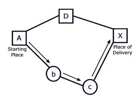

Problem G
Toll! Revisited
Input: Standard Input
Output: Standard Output
Time Limit: 1 Second
Sindbad the Sailor sold 66 silver spoons to the Sultan of Samarkand. The selling was quite easy; but delivering was complicated. The items were transported over land, passing through several towns and villages. Each town and village demanded an entry toll. There were no tolls for leaving. The toll for entering a village was simply one item. The toll for entering a town was one piece per 20 items carried. For example, to enter a town carrying 70 items, you had to pay 4 items as toll. The towns and villages were situated strategically between rocks, swamps and rivers, so you could not avoid them.
|
|
|
Figure 1: To reach |
|  |

|
|
Figure 2: The best route to reach X with 39 spoons, starting from A, is A->b->c->X, shown with arrows in the figure on the left. The best route to reach X with 10 spoons is A->D->X, shown in the figure on the right. The figures display towns as squares and villages as circles. |
|
Predicting the tolls charged in each village or town is quite simple, but finding the best route (the cheapest route) is a real challenge. The best route depends upon the number of items carried. For numbers up to 20, villages and towns charge the same. For large numbers of items, it makes sense to avoid towns and travel through more villages, as illustrated in Figure 2.
You must write
a program to solve Sindbad’s problem. Given the number of items to be delivered
to a certain town or village and a road map, your program must determine the
total number of items required at the beginning of the journey that uses a
cheapest route. You will also have to find the cheapest route. If there is more
than one such route, print the lexicographically smallest one (A-n-d is smaller than a-n-d).
Input
The input consists of several test cases. Each test case consists of two parts: the roadmap followed by the delivery details.
The first line of the roadmap contains an integer n, which is the number of roads in the map (0 <= n). Each of the next n lines contains exactly two letters representing the two endpoints of a road. A capital letter represents a town; a lower case letter represents a village. Roads can be traveled in either direction.
Following the roadmap is a single
line for the delivery details. This line consists of three things: an integer p (0 < p < 1000000000) for the
number of items that must be delivered, a letter for the starting place, and a
letter for the place of delivery. The roadmap is always such that the items can
be delivered.
The last test case is followed by a line containing the number -1.
Output
The output consists of three lines for each test case. First line displays the case number, second line shows the number of items required at the beginning of the journey and third line shows the path according to the problem statement above. Actually, the path contains all the city/village names that Sindbad sees along his journey. Two consecutive city/village names in the path are separated by a hyphen.
Sample
Input Output
for Sample Input
|
1 a Z 19 a Z 5 A D D X A b b c c X 39 A X -1 |
Case 1: 20 a-Z Case 2:44A-b-c-X |
Orignal Problem: ACM ICPC World Finals 2003, Enhanced by SM, Member of EPP